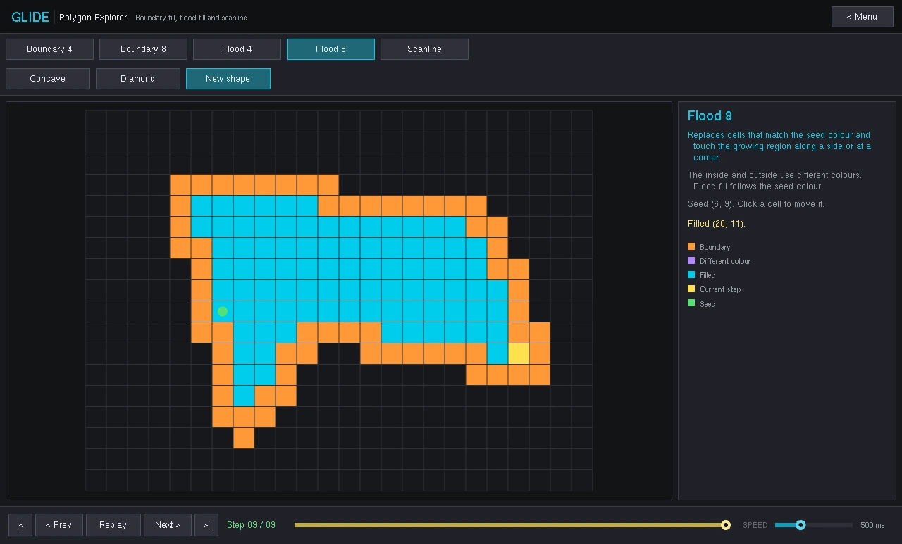

Windows
x64 · ZIP
Extract the ZIP and run glide.exe.
Watch lines, circles, and polygons take shape on a pixel grid. Step through the drawing, change the input, and see how each algorithm works.
Download GLIDEWindows · macOS · Linux

x64 · ZIP
Extract the ZIP and run glide.exe.
Apple Silicon & Intel · ZIP
Extract and open GLIDE.app on macOS 12 or later.
x64 · TAR.GZ
Extract the archive and run ./glide from its folder.
Smart App Control can block unsigned Windows releases. Gatekeeper can block ad hoc–signed macOS releases.
Place two endpoints and compare which pixels DDA and Bresenham choose.
Choose a centre and radius, then step through DDA, Bresenham, or Midpoint.
Draw a polygon and watch boundary fill, flood fill, or scanline fill colour it.
Enter an equation such as sin(x) and see how short lines build the curve.